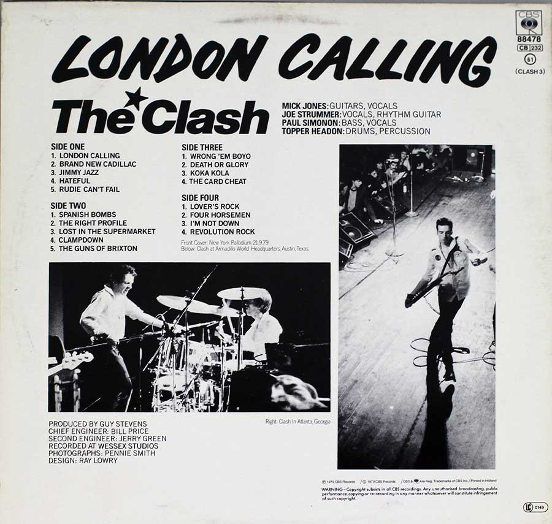

Informations

The Clash-London Calling(1979)
London Calling is the third studio album by English rock band the Clash. It was originally released as a double album in the United Kingdom on 14 December 1979 by CBS Records, and in the United States in January 1980 by Epic Records. The Clash recorded the album with producer Guy Stevens at Wessex Sound Studios in London during August, September and November 1979, following a change in management and a period of writer's block for songwriters Joe Strummer and Mick Jones. Bridging a traditional punk rock sound and a new wave aesthetic, London Calling reflects the band's growing interest in styles beyond their punk roots, including reggae, rockabilly, ska, New Orleans R&B, pop, lounge jazz, and hard rock. Themes include social displacement, unemployment, racial conflict, drug use, and the responsibilities of adulthood.
The album was a top ten chart success in the UK, and its lead single "London Calling" was a top 20 single. The album has sold over five million copies worldwide, and was certified platinum in the United States for sales of one million. It was also met with widespread critical acclaim and has retrospectively been named one of the greatest albums of all time.[1] On Rolling Stone's list of The 500 Greatest Albums of All Time, London Calling ranked eighth in the 2003 and 2012 editions, and sixteenth in the 2020 edition.
